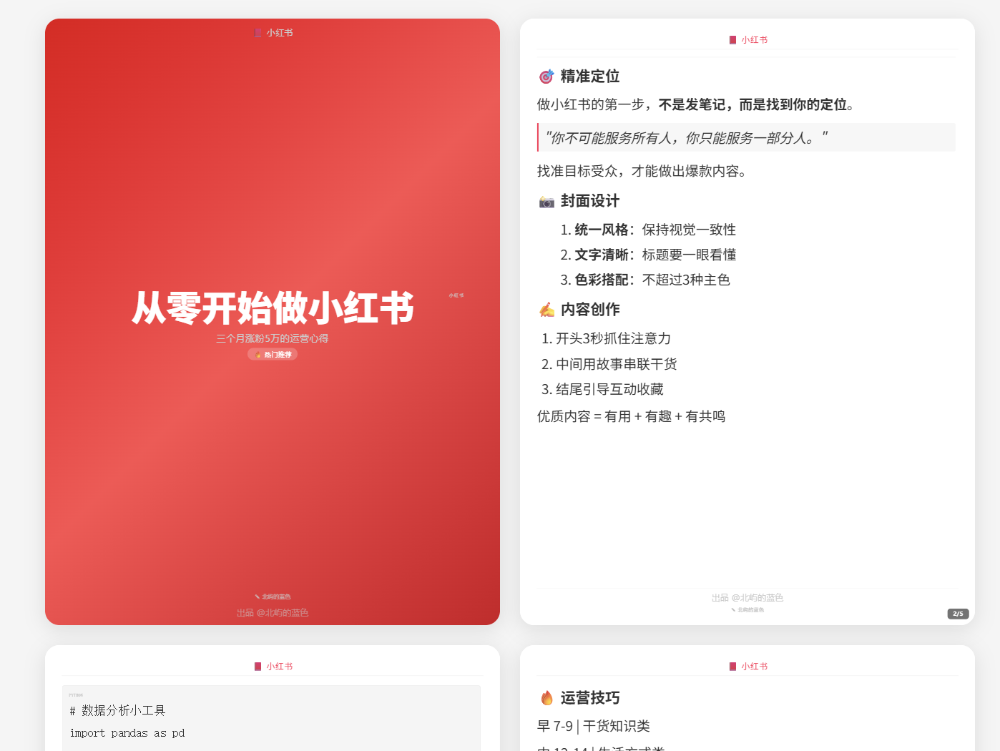
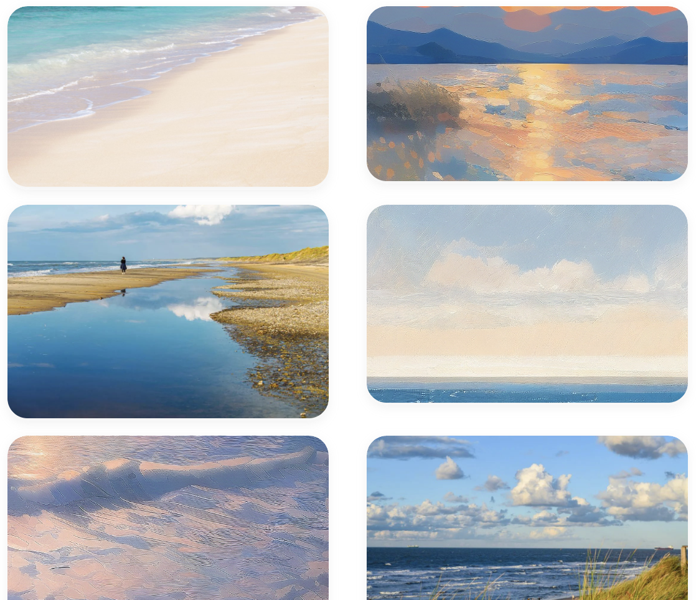
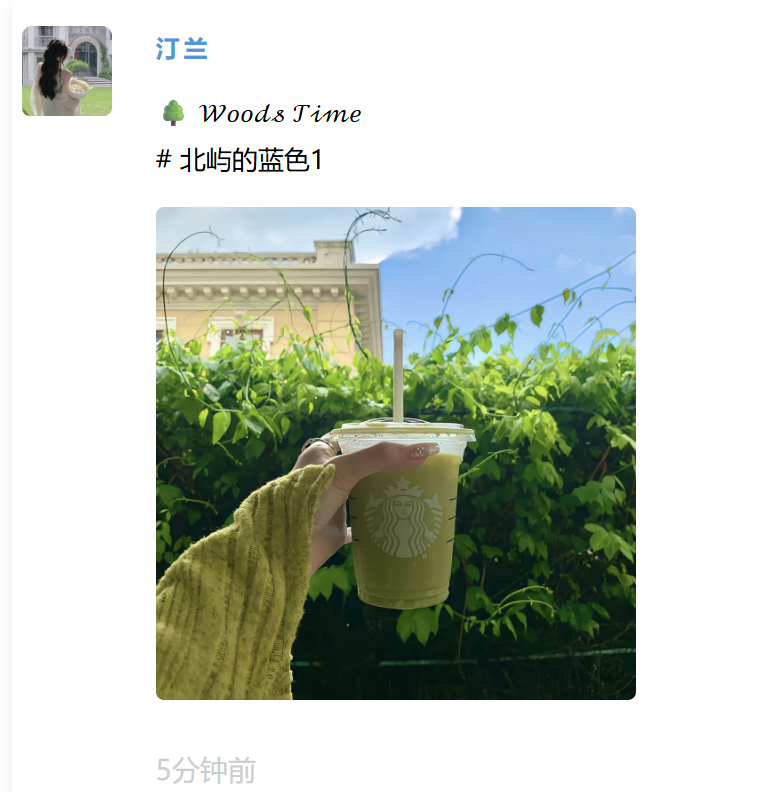
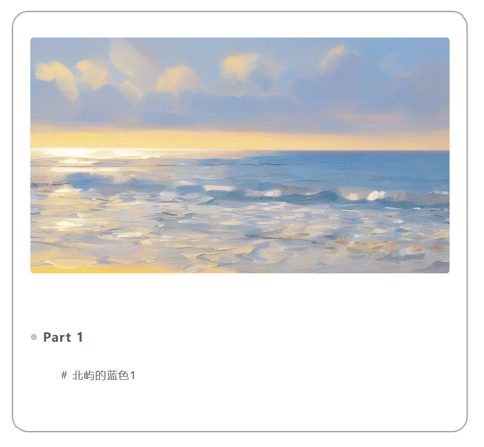
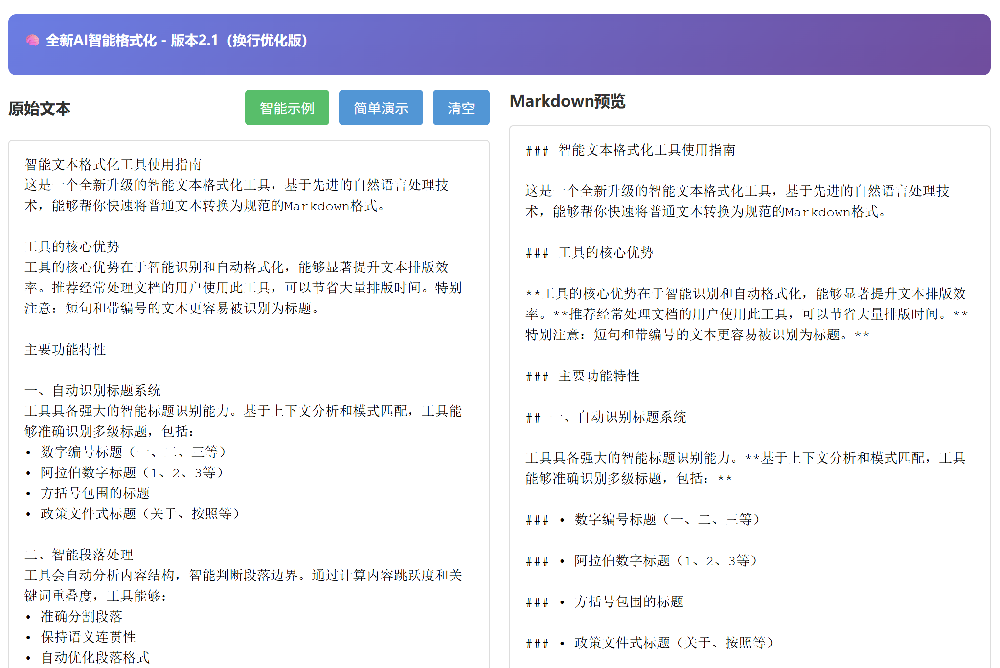
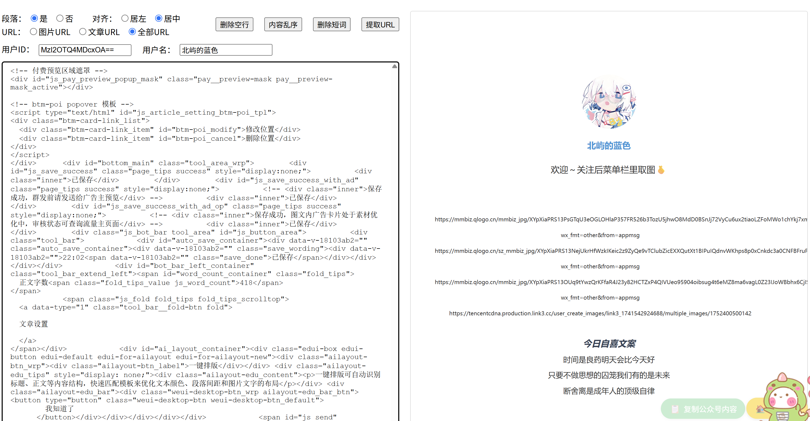

简单、高效的在线工具集合，提升您的工作效率
预览Markdown排版效果-IMG
实时预览Markdown文档的排版效果，支持多种主题和样式。

预览Markdown排版效果-小红书
实时预览Markdown文档的小红书排版效果，支持多种主题和样式。
纯净版

文字版



文本转为Markdown格式
将普通文本快速转换为Markdown格式，自动识别标题、列表等元素。
Markdown实时预览工具
在编辑Markdown文档时实时查看渲染效果，提高写作效率。
MD换行格式化工具
将Markdown内容转换为适合微信公众号发布的格式，优化阅读体验。

用于提取HTML标签的URL
从HTML文档中提取所有链接、图片地址等URL资源。
上上签